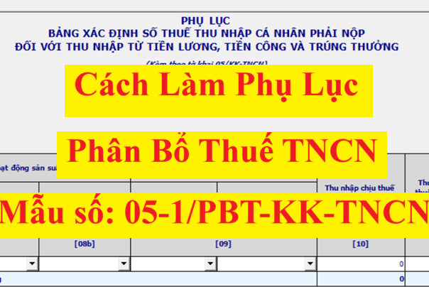
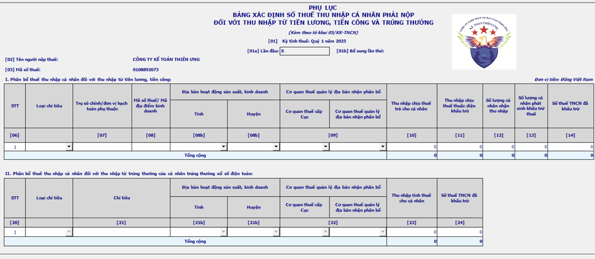

Hướng dẫn cách kê khai Phụ lục số 05-1/PBT-KK-TNCN Phân bổ thuế TNCN theo thông tư 80/2021/TT-BTC trên phần mềm HTKK
Phụ lục số 05-1/PBT-KK-TNCN là Phụ lục bảng xác định số thuế thu nhập cá nhân phải nộp đối với thu nhập từ tiền lương, tiền công và trúng thưởng
1. Đối tượng phải kê khai Phụ lục số 05-1/PBT-KK-TNCN
Bao gồm có 2 đối tượng sau:
1.1. Tổ chức trả thu nhập từ tiền lương, tiền công thực hiện phân bổ thuế TNCN trong trường hợp tổ chức tại trụ sở chính trả thu nhập cho người lao động làm việc tại đơn vị phụ thuộc, địa điểm kinh doanh tại tỉnh khác thực hiện khấu trừ thuế TNCN
Theo tiết a1, điểm a, khoản 3, Điều 19 của thông tư 80/2021/TT-BTC quy định về Khai thuế, tính thuế, phân bổ thuế thu nhập cá nhân thì:

3. Khai thuế, nộp thuế:
a) Thuế thu nhập cá nhân đối với thu nhập từ tiền lương, tiền công:
a.1) Người nộp thuế chi trả tiền lương, tiền công cho người lao động làm việc tại đơn vị phụ thuộc, địa điểm kinh doanh tại tỉnh khác với nơi có trụ sở chính, thực hiện khấu trừ thuế thu nhập cá nhân đối với thu nhập từ tiền lương, tiền công theo quy định và nộp hồ sơ khai thuế theo mẫu số 05/KK-TNCN, phụ lục bảng xác định số thuế thu nhập cá nhân phải nộp cho các địa phương được hưởng nguồn thu theo mẫu số 05-1/PBT-KK-TNCN ban hành kèm theo phụ lục II Thông tư này cho cơ quan thuế quản lý trực tiếp; nộp số thuế thu nhập cá nhân đối với thu nhập từ tiền lương, tiền công vào ngân sách nhà nước cho từng tỉnh nơi người lao động làm việc theo quy định tại khoản 4 Điều 12 Thông tư này. Số thuế thu nhập cá nhân xác định cho từng tỉnh theo tháng hoặc quý tương ứng với kỳ khai thuế thu nhập cá nhân và không xác định lại khi quyết toán thuế thu nhập cá nhân.
1.2. Công ty xổ số điện toán thực hiện khấu trừ đối với thu nhập từ trúng thưởng của cá nhân trúng thưởng xổ số điện toán phân bổ thuế TNCN hàng tháng/quý thực hiện kê khai phần II Phụ lục 05-1/PBT-KK-TNCN.
Theo điểm b, khoản 3, Điều 19 của thông tư 80/2021/TT-BTC quy định về Khai thuế, tính thuế, phân bổ thuế thu nhập cá nhân thì:
3. Khai thuế, nộp thuế:
b) Thuế thu nhập cá nhân đối với thu nhập từ trúng thưởng của cá nhân trúng thưởng xổ số điện toán:
Người nộp thuế là tổ chức trả thu nhập khấu trừ thuế thu nhập cá nhân đối với thu nhập từ trúng thưởng xổ số điện toán của cá nhân thực hiện khai thuế thu nhập cá nhân theo quy định, nộp hồ sơ khai thuế theo mẫu số 06/TNCN, phụ lục bảng xác định số thuế thu nhập cá nhân phải nộp cho các địa phương được hưởng nguồn thu theo mẫu số 05-1/PBT-KK-TNCN ban hành kèm theo phụ lục II Thông tư này cho cơ quan thuế quản lý trực tiếp; nộp số thuế thu nhập cá nhân đối với thu nhập từ trúng thưởng vào ngân sách nhà nước cho từng tỉnh nơi cá nhân đăng ký tham gia dự thưởng đối với phương thức phân phối thông qua phương tiện điện thoại hoặc internet và nơi phát hành vé xổ số điện toán đối với phương thức phân phối thông qua thiết bị đầu cuối theo quy định tại khoản 4 Điều 12 Thông tư này.
2. Mẫu phụ lục số 05-1/PBT-KK-TNCN theo thông tư 80/2021/TT-BTC trên phần mềm HTKK

3. Cách kê khai Phụ lục số 05-1/PBT-KK-TNCN TT80 trên HTKK
Phụ lục số 05-1/PBT-KK-TNCN có 2 mục:
+ Mục “I. Phân bổ thuế thu nhập cá nhân đối với thu nhập từ tiền lương, tiền công”: Chỉ cho phép nhập khi làm tờ khai thuế thu nhập cá nhân đối với thu nhập từ tiền lương, tiền công mẫu 05/KK-TNCN
+ Mục "II – Phân bổ thuế thu nhập cá nhân đối với thu nhập từ trúng thưởng của cá nhân trúng thưởng xổ số điện toán": Chỉ cho phép nhập khi làm tờ khai thuế thu nhập cá nhân Mẫu 06/TNCN
+ Mục "II – Phân bổ thuế thu nhập cá nhân đối với thu nhập từ trúng thưởng của cá nhân trúng thưởng xổ số điện toán": Chỉ cho phép nhập khi làm tờ khai thuế thu nhập cá nhân Mẫu 06/TNCN
Chi tiết cách kê khai từng mục như sau:
Kê khai mục I. Phân bổ thuế thu nhập cá nhân đối với thu nhập từ tiền lương, tiền công:
Cột chỉ tiêu [06] Số thứ tự: Được ghi lần lượt theo chữ số trong dãy chữ số tự nhiên (1, 2, 3….).
Cột chỉ tiêu [07] Trụ sở chính/ đơn vị hạch toán phụ thuộc: Xác định thực tế khấu trừ theo từng chi nhánh và kê khai theo thực tế.
Cột chỉ tiêu [08] Mã số thuế/ Mã địa điểm kinh doanh: Ghi đầy đủ mã số thuế của tổ chức, cá nhân trả thu nhập theo Giấy chứng nhận đăng ký thuế hoặc Thông báo mã số thuế. Trường hợp chỉ tiêu [07] là trụ sở chính không ghi thông tin này.
Cột chỉ tiêu [08a] Địa bàn hoạt động sản suất, kinh doanh – Tỉnh: Khai tên huyện thuộc tỉnh nơi có đơn vị phụ thuộc, địa điểm kinh doanh khác tỉnh với nơi đóng trụ sở chính.
Cột chỉ tiêu [08b] Địa bàn hoạt động sản suất, kinh doanh – Tỉnh: Khai tên tỉnh nơi có đơn vị phụ thuộc, địa điểm kinh doanh khác tỉnh với nơi đóng trụ sở chính.
Cột chỉ tiêu [09] Cơ quan thuế quản lý địa bàn nhận phân bổ: Khai thông tin tên cơ quan thuế quản lý địa bàn nhận phân bổ nơi được hưởng khoản thu phân bổ này
Cột chỉ tiêu [10] Thu nhập chịu thuế trả cho cá nhân: Khai tổng các khoản thu nhập chịu thuế từ tiền lương, tiền công và các khoản thu nhập chịu thuế khác có tính chất tiền lương, tiền công trụ sở chính đã trả cho cá nhân trong kỳ thực tế làm việc tại trụ sở chính hoặc chi nhánh.
Cột chỉ tiêu [11] Thu nhập chịu thuế thuộc diện khấu trừ: Khai tổng các khoản thu nhập chịu thuế từ tiền lương, tiền công và các khoản thu nhập chịu thuế khác có tính chất tiền lương, tiền công trụ sở chính đã trả cho cá nhân thuộc diện phải khấu trừ thuế trong kỳ thực tế làm việc tại trụ sở chính hoặc chi nhánh.
Cột chỉ tiêu [12] Số lượng cá nhân nhận thu nhập: Khai số lượng cá nhân có thu nhập từ tiền lương, tiền công trụ sở chính đã trả thu nhập trong kỳ thực tế làm việc tại trụ sở chính hoặc chi nhánh.
Cột chỉ tiêu [13] Số lượng cá nhân phát sinh khấu trừ thuế: Khai số lượng cá nhân có thu nhập từ tiền lương, tiền công trụ sở chính đã khấu trừ thuế trong kỳ thực tế làm việc tại trụ sở chính hoặc chi nhánh.
Cột chỉ tiêu [14] Số thuế TNCN đã khấu trừ: Khai số tiền thuế trụ sở chính đã khấu trừ của các cá nhân có thu nhập từ tiền lương, tiền công trong kỳ thực tế làm việc tại trụ sở chính hoặc chi nhánh.
Cột chỉ tiêu [15] Tổng chỉ tiêu [10] thu nhập chịu thuế trả cho cá nhân: Khai tổng số thu nhập chịu thuế trụ sở chính đã trả cho cá nhân tại cả trụ sở chính và các chi nhánh.
Cột chỉ tiêu [16] Tổng chỉ tiêu [11] Thu nhập chịu thuế thuộc diện khấu trừ: Khai tổng số thu nhập chịu thuế thuộc diện khấu trừ trụ sở chính đã trả cho cá nhân tại cả trụ sở chính và các chi nhánh.
Cột chỉ tiêu [17] Tổng chỉ tiêu [12] Số lượng cá nhân nhận thu nhập: Khai tổng số cá nhân trụ sở chính đã trả thu nhập tại cả trụ sở chính và các chi nhánh.
Cột chỉ tiêu [18] Tổng chỉ tiêu [13] Số lượng cá nhân phát sinh khấu trừ thuế: Khai tổng số cá nhân trụ sở chính đã trả thu nhập thuộc diện khấu trừ thuế tại cả trụ sở chính và các chi nhánh
Cột chỉ tiêu [19] Tổng chỉ tiêu [14] Số thuế TNCN đã khấu trừ: Khai tổng số thuế TNCN trụ sở chính đã khấu trừ của cá nhân tại cả trụ sở chính và các chi nhánh.
| Bảng kê 05-1/PBT-KK-TNCN trên phần mềm HTKK |
|
- Khi làm Tờ khai thuế thu nhập cá nhân 05/KK-TNCN: Chỉ cho phép nhập mục “I. Phân bổ thuế thu nhập cá nhân đối với thu nhập từ tiền lương, tiền công”, khóa mục II
Các chỉ tiêu chi tiết: tại mục I. Phân bổ thuế thu nhập cá nhân đối với thu nhập từ tiền lương, tiền công
+ Chỉ tiêu [06]: Phần mềm tự động tăng/giảm khi thêm/bớt dòng, không cho sửa
+ Chỉ tiêu [07]: NNT tự nhập
+ Chỉ tiêu [08]: Cho phép nhập, kiểm tra đúng cấu trúc MST hoặc mã địa điểm kinh doanh 5 số, trong trường hợp trụ sở chính không cho nhập thông tin.
+ Chỉ tiêu [08a], [08b]: Cho phép chọn trong danh mục. Kiểm tra tỉnh của Chi nhánh phải khác tỉnh của trụ sở chính
+ Chỉ tiêu [09]: Cho phép chọn trong danh mục, kiểm tra ràng buộc CQT quản lý địa bàn nhận phân bổ trên bảng kê không được trùng nhau
+ Chỉ tiêu [10], [11], [12], [13]: NNT nhập số, không âm, mặc định là 0, tối đa 16 số
+ Chỉ tiêu [14]: NNT nhập số, không âm, mặc định là 0, tối đa 13 số
+ Chỉ tiêu [15], [16], [17], [18]: Hệ thống tự tính tổng, không cho sửa
+ Chỉ tiêu [19]: Hệ thống tự tính tổng, không cho sửa, kiểm tra phải bằng chỉ tiêu [29] trên tờ khai
|
|
Công ty đào tạo Kế Toán Diệu Tâm mời các bạn tham khảo thêm: |
Kê khai mục II. Phân bổ thuế thu nhập cá nhân đối với thu nhập từ trúng thưởng của cá nhân trúng thưởng xổ số điện toán:
Cột chỉ tiêu [20] STT: Số thứ tự các đơn vị phụ thuộc khác tỉnh với nơi NNT đóng trụ sở chính
Cột chỉ tiêu [21] Tên các đơn vị phụ thuộc khác tỉnh với nơi NNT đóng trụ sở chính
Phân bổ thuế TNCN đối với thu nhập của cá nhân trúng thưởng được thực hiện theo điểm b Khoản 2 Điều 6 Nghị định số 122/2017/NĐ-CP ngày 13/11/2017 của Chính phủ.
- Tên đơn vị phụ thuộc khác tỉnh với nơi NNT đóng trụ sở chính: Kê khai cho tỉnh nơi đơn vị phụ thuộc đóng trụ sở vào chỉ tiêu này. Trường hợp trong một tỉnh có nhiều đơn vị phụ thuộc ở nhiều huyện thì chọn 01 đơn vị phụ thuộc tại 01 địa bàn huyện phát sinh doanh thu để kê khai.
- Tên địa điểm kinh doanh khác tỉnh với nơi NNT đóng trụ sở chính: Kê khai cho tỉnh nơi có địa điểm kinh doanh nếu phát sinh doanh thu bán vé theo từng địa điểm kinh doanh. Trường hợp có nhiều địa điểm kinh doanh trên nhiều huyện thuộc một tỉnh thì chọn 01 địa điểm kinh doanh tại 01 địa bàn huyện phát sinh doanh thu để kê khai.
- Nơi không có đơn vị phụ thuộc, địa điểm kinh doanh: Kê khai cho tỉnh nơi không có đơn vị phụ thuộc, địa điểm kinh doanh nhưng có phát sinh doanh thu bán vé. Trường hợp trong một tỉnh có phát sinh doanh thu bán vé ở nhiều huyện thì chọn 01 địa bàn huyện phát sinh doanh thu để kê khai.
Cột chỉ tiêu [21a]: Kê khai địa bàn cấp huyện nơi có đơn vị phụ thuộc, địa điểm kinh doanh khác tỉnh với nơi người nộp thuế đóng trụ sở chính.
Cột chỉ tiêu [21b]: Kê khai địa bàn cấp tỉnh nơi có đơn vị phụ thuộc, địa điểm kinh doanh khác tỉnh với nơi người nộp thuế đóng trụ sở chính.
Lưu ý Chỉ tiêu [21a], [21b]: Kê khai địa bàn cấp huyện, tỉnh nơi có đơn vị phụ thuộc, địa điểm kinh doanh hoặc hoạt động bán vé khác tỉnh với nơi người nộp thuế đóng trụ sở chính. Trường hợp có nhiều đơn vị phụ thuộc, địa điểm kinh doanh hoặc hoạt động bán vé trên nhiều huyện thuộc một cơ quan thuế quản lý địa bàn nhận phân bổ là Cục Thuế thì chọn 1 đơn vị đại diện hoặc một huyện để kê khai vào chỉ tiêu này. Trường hợp có đơn vị phụ thuộc, địa điểm kinh doanh hoặc hoạt động bán vé trên nhiều huyện thuộc 1 cơ quan thuế quản lý địa bàn nhận phân bổ là Chi cục Thuế khu vực thì chọn 1 đơn vị đại diện hoặc 1 huyện do Chi cục Thuế khu vực quản lý để kê khai vào chỉ tiêu này.
Cột chỉ tiêu [22] Cơ quan thuế quản lý địa bàn nhận phân bổ: Tên cơ quan thuế tương ứng đơn vị phụ thuộc khác tỉnh với nơi NNT đóng trụ sở chính.
Cột chỉ tiêu [23] Thu nhập tính thuế cho cá nhân: tổng thu nhập tính thuế cho cá nhân trong đơn vị phụ thuộc khác tỉnh với nơi NNT đóng trụ sở chính.
Cột chỉ tiêu [24] Số thuế TNCN đã khấu trừ: Số thuế TNCN đã khấu trừ của cá nhân trong đơn vị phụ thuộc khác tỉnh với nơi NNT đóng trụ sở chính.
Cột chỉ tiêu [25] là tổng cộng thu nhập tính thuế từ trúng thưởng của các cá nhân đã khấu trừ thuế tại cột chỉ tiêu [23].
Cột chỉ tiêu [26] là tổng cộng số thuế TNCN đã khấu trừ của các cá nhân tại cột chỉ tiêu [24].
| Bảng kê 05-1/PBT-KK-TNCN trên phần mềm HTKK |
|
+ Đối với tờ khai 06/TNCN chỉ cho phép nhập phần II – Phân bổ thuế thu nhập cá nhân đối với thu nhập từ trúng thưởng của cá nhân trúng thưởng xổ số điện toán
+ Chỉ tiêu [20]: Phần mềm tự tăng/giảm khi thêm/bớt dòng
+ Chỉ tiêu [21]: NNT tự nhập
+ Chỉ tiêu [21a], [21b], [22]: Cho phép chọn trong danh mục
+ Chỉ tiêu [23]: NNT tự nhập dạng số, không âm, mặc định là 0, tối đa 16 chữ sốTài liệu hướng dẫn sử dụng_Ứng dụng Hỗ trợ kê khai
+ Chỉ tiêu [24]: Phần mềm tính theo công thức: Chỉ tiêu [24] = [23] *10%, không cho sửa
+ Chỉ tiêu [25], [26]: Hệ thống tính tổng, không cho phép sửa.
|
|
Công ty đào tạo Kế Toán Diệu Tâm mời các bạn tham khảo thêm: |